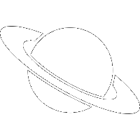

Postdoctoral Scholar
LIGO Laboratory, Caltech
My research is in gravitational wave astrophysics with ground-based laser interferometers, particularly the Laser Interferometer Gravitational-wave Observatory (LIGO) and its European counterpart, Virgo. I am specifically interested in multimessenger astronomy with LIGO, Virgo, and various high-energy, optical, and radio observatories both around the world and in space. These activities include real-time calibration of the LIGO data stream, participateing in electromagnetic follow-up observations of gravitational wave transients, and contributing to data quality monitoring during Advanced LIGO's second observing run.
I am also interested in studying more generic relativistic explosions originating in deep space with colleagues at the Palomar Transient Factory (PTF).
Read more June 2016 - Present
Ph.D., Physics
Department of Physics, University of Wisconsin-Milwaukee
As a grad student I was involved in various multimessenger astronomy projects on the road to Advanced LIGO. I developed new software to rapidly identify electromagnetic counterparts of compact binary mergers, participated in follow-up observations of the first ever gravitational wave transient sources, and contributed to data quality monitoring during the first observing run. I also played an active role in the "first two years" study, which outlined the detailed sky map morphology that astronomers could expect from LIGO detections of compact binary coalescence in the first two observing runs.
With colleagues at the Palomar Transient Factory (PTF) based at Caltech, I also participated in the first discovery of a long-duration γ-ray burst by its optical afterglow emission (see ATel 5924). Discovery of this transient source independent of any high-energy trigger is an important proof-of-concept in the hunt for relativistic explosions that vary on ~hour-long timescales.
While at UWM, I also engaged the public as part of the Coffeeshop Astrophysics program. Founded by then-fellow grad student Sydney Chamberlin, this program is a grassroots public outreach campaign which brought our universe down to Earth at Anodyne Coffee near Walker's Point in downtown Milwaukee.
Read more August 2010 - May 2016Bachelor of Science (B.S., Physics)
Allegheny College
Four years of study at Allegheny College gave me a broad knowledge base in classical and modern physics, experimental methods, and the societal impact of science, all in a warm and encouraging atmosphere. In my final year, I specialized in computational statistical mechanics and was elected president of the astronomy club, where I arranged many social events during the World Year of Astronomy in 2009.
August 2006 - May 2010